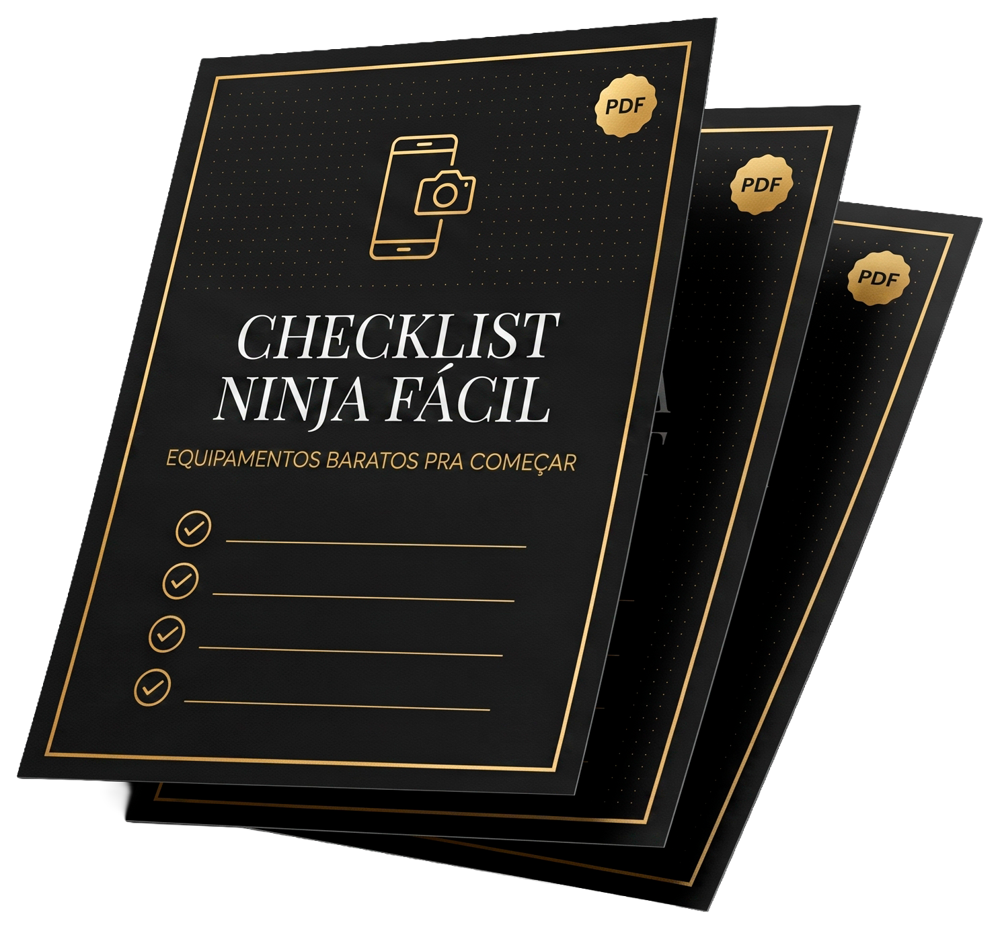

Em 1 aula ao vivo e gratuita, vou te ensinar a gravar fotos e vídeos profissionais usando só o celular que você já tem no bolso.
-
Passo a passo do zero -
Sem comprar nenhum equipamento -
Resultado prático ainda durante a aula
Presença
Cuiabá, MT
Herança
Cultura Japonesa
Trajetória
15+ Anos de Arte
Próxima Aula Ao Vivo
10 de Setembro · 21h (Cuiabá)

Antes mesmo da aula começar, você já sai ganhando.
Todo mundo que participar da aula ao vivo recebe o Checklist Ninja Fácil: o que vale (e o que não vale) comprar pra gravar seus primeiros vídeos, lapela, luz e indicação de celular, mais um desconto de um parceiro do Márcio pra quem precisar trocar de aparelho.
Valor deste checklist
De R$47
Por participar da aula
Grátis
Liberado durante a aula ao vivo, dia 10 de setembro. Só rola pra quem estiver lá.
Essa aula é só ao vivo, sem gravação depois.
Se der pra você entrar no grupo e estar lá no dia 10 de setembro às 21h, é a única forma de acompanhar. Não fica um replay guardado pra assistir depois.
Tudo isso, ao vivo, numa aula só.
Você não precisa de uma câmera profissional pra começar. Primeiro o Márcio te ensina a enxergar e dominar aquilo que já está na sua mão. É por ele que vamos começar.
Câmera Pelo Celular
Como segurar, configurar e enquadrar sem precisar de equipamento caro.
Luz e Enquadramento
Aproveitar a luz que você já tem em casa, sem comprar nenhum equipamento.
Roteiro e Direção
Como se posicionar e conduzir a cena com naturalidade, sem travar na frente da câmera.
Edição Simples
Cortes e ajustes rápidos, sem precisar dominar um app complicado.
Conteúdo Que Vende
Transformar o que você grava em algo que atrai cliente de verdade.
Fotos Que Impressionam
Retratos e still simples que parecem produção profissional, só com o que você já tem.
Depois desse primeiro passo, tem caminho pra quem quiser ir além (câmera profissional, formação avançada), mas isso é assunto pra depois. Hoje é só sobre o que você já tem no bolso.
Vagas limitadas no grupo do WhatsApp
Uma aula com começo, meio e fim. Sem enrolação.
Direto ao ponto, do início ao fim da aula ao vivo.
Você pode ser excelente no que faz. Se ninguém vê, o mercado não percebe.
Antes de entrar no grupo, vê se essa aula é mesmo pra você.
É pra você se
-
Você já domina o que faz (médico, advogado, consultor, palestrante, dono de negócio, prestador de serviço) mas nunca conseguiu gravar um vídeo decente de si mesmo -
Sente que tem valor pra mostrar, mas trava na hora de aparecer, gravar ou editar -
Nunca gravou um vídeo com o próprio celular, ou já tentou e não gostou do resultado -
Quer aprender do absoluto zero, sem comprar equipamento nenhum
Não é pra você se
-
Você já grava e edita seus próprios vídeos com tranquilidade, esse conteúdo vai parecer básico -
Está procurando virar fotógrafo profissional ou prestador de serviço de fotografia, esse é outro caminho, não é o desta aula -
Quer direto câmera profissional, luz de estúdio e formação avançada, isso existe no caminho do Márcio, mas é assunto pra depois, não desta aula
Fotógrafo · Mentor · Palestrante
Márcio Ishizuka
15+ Anos de Mercado
"Não era a câmera que precisava melhorar. Era eu."
Há mais de 15 anos o Márcio é fotógrafo profissional em Cuiabá. 99% dos clientes chegam por agências de publicidade, não por procura direta do público. É um nome forte no mercado B2B, mas praticamente desconhecido de quem não trabalha com propaganda.
A trajetória pessoal dele é o maior diferencial. Foi no Japão que entendeu, pela primeira vez, que equipamento sozinho não bastava. De volta ao Brasil, com muito pouco dinheiro no bolso, teve que provar pra si mesmo que aquilo que tinha aprendido era suficiente pra recomeçar do zero. Ele conta essa história inteira, pela primeira vez, na aula ao vivo do dia 10 de setembro.
-
Nome consolidado no mercado publicitário de Cuiabá, mesmo sendo desconhecido do público geral -
Passou por 9 trabalhos veiculados em outdoor pela cidade sem que a própria família soubesse que eram dele -
Raízes na cultura japonesa e no budô, base da disciplina que aplica atrás das câmeras
15+
Anos de Mercado
99%
Clientes via Agência
9
Trabalhos em Outdoor
Antes de entrar, tira suas dúvidas.
As perguntas que mais aparecem quando alguém pensa em participar.
Não tenho facilidade com tecnologia, ainda assim consigo acompanhar?
É normal achar isso quando a maioria dos tutoriais parece ter sido feita por quem já nasceu usando aplicativo. Mas o problema nunca foi a idade, foi a forma como ensinaram até hoje. Na aula, o passo a passo começa do absoluto zero.
Não sei se vou ter tempo, será que vale a pena entrar?
A rotina cheia é real, não é desculpa. Por isso a aula é só uma vez, com hora marcada (21h) e sem enrolação: você separa esse horário, participa ao vivo, e sai com o passo a passo pronto, sem precisar voltar todo dia num curso longo.
Meu celular não é bom, dá pra fazer mesmo assim?
Dá. A promessa da aula já parte disso: usar o celular que você já tem no bolso, sem comprar câmera nem equipamento caro. E quem participar ainda sai com o checklist de itens baratos pra melhorar o resultado, se quiser.
Já tentei aprender sozinho antes e não consegui. Vai ser diferente dessa vez?
A maioria dos tutoriais parte do princípio que você já sabe onde estão os botões. Aqui não. Não precisa aprender o aplicativo inteiro, só um punhado de funções essenciais já resolve a maior parte do que você vai gravar e editar.
Tenho vergonha de aparecer em vídeo, isso é um problema?
É normal se sentir exposto numa ferramenta nova, ainda mais aparecendo em vídeo. Mas quem assiste quer o seu conhecimento, não perfeição técnica. O foco da aula é te dar segurança pra gravar, não te transformar em ator.
Meu filho ou funcionário já cuida disso pra mim. Por que aprender eu mesmo?
Delegar parece mais fácil até depender de terceiro pra tudo travar sua velocidade e o controle sobre a sua própria imagem. Ter autonomia pra gravar e ajustar na hora que precisar, sem esperar ninguém, sai mais rápido no fim.
A aula é paga?
Não. A aula ao vivo é 100% gratuita. Você só precisa entrar no grupo do WhatsApp pra receber o link de acesso e os avisos antes do dia 10 de setembro.
Vai ter gravação disponível depois?
Não. É só ao vivo, sem replay depois. Se der pra você estar lá no dia 10 de setembro às 21h, é a única forma de acompanhar.
Vagas limitadas no grupo do WhatsApp